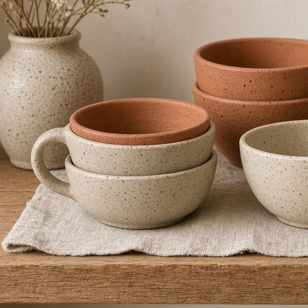
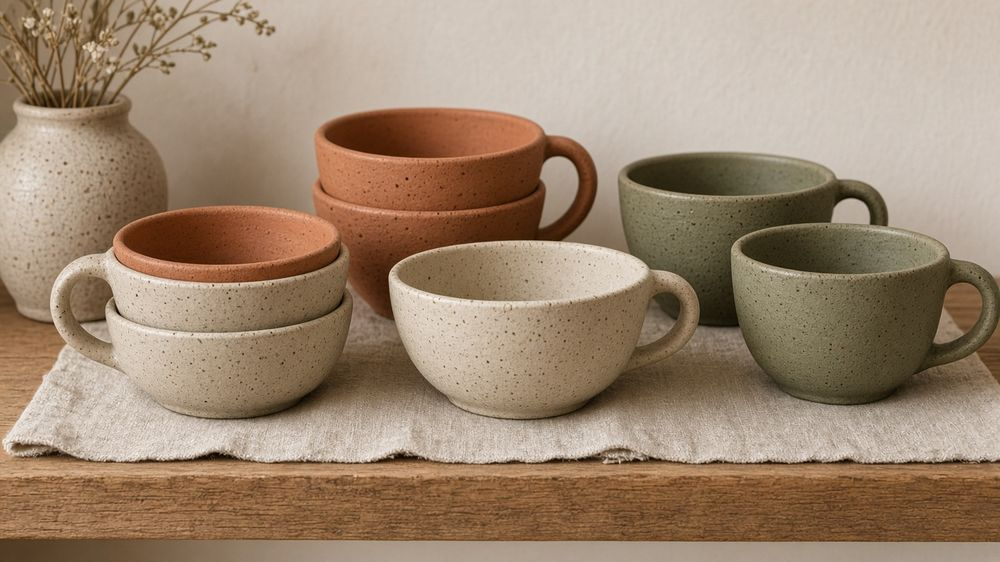
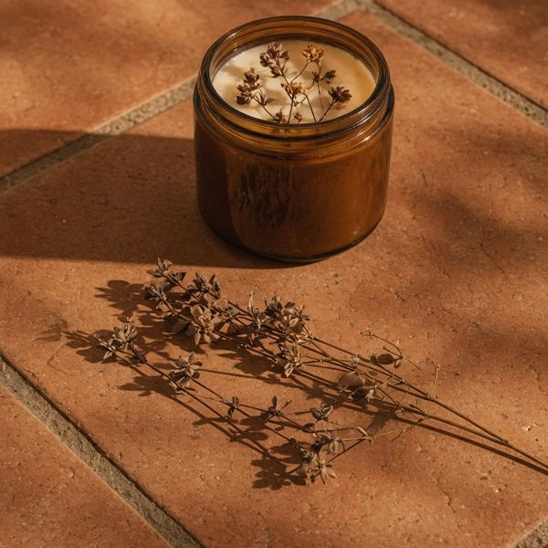
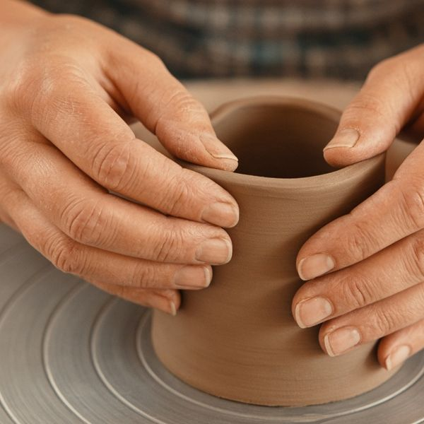
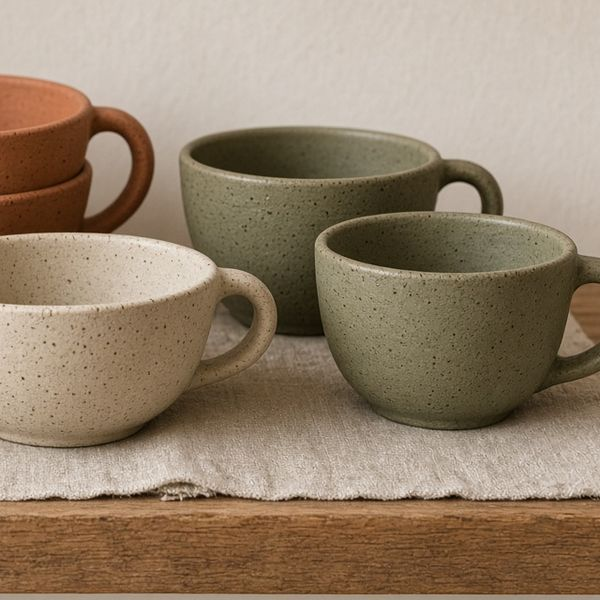
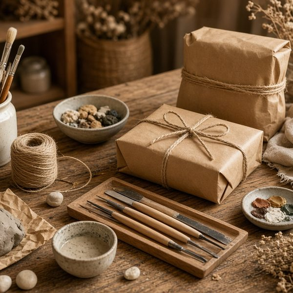
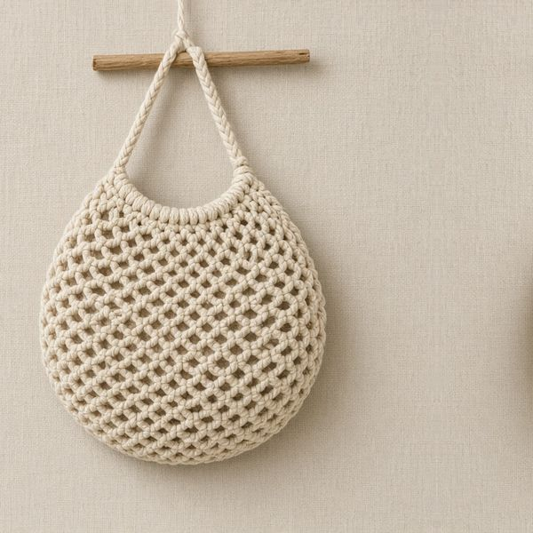
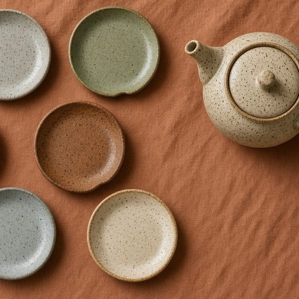
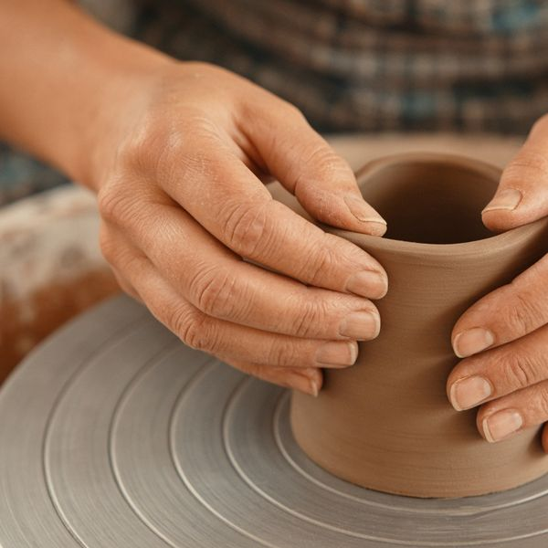
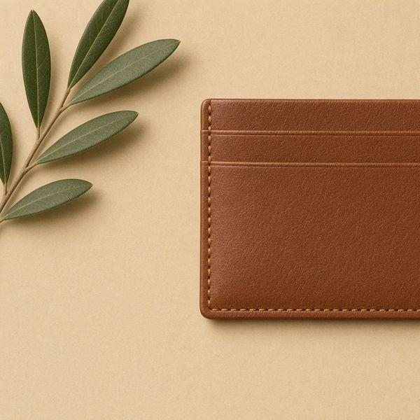

陶瓷
手捏陶杯、碗及花瓶，啞光釉色
HK$180 起（示範）
訂製類似網站

the shop
少量製作，賣完要等下一批。價錢為示範。

workshop
由揉泥、塑形到上釉，兩個半小時完成一隻屬於自己的杯。作品燒製後約 3 週取件。
custom orders
四個步驟，全程可線上溝通。
話我知用途、顏色、尺寸同預算，可附參考圖。
我會畫草圖或影樣辦相，確認價錢及製作時間（約 7–14 天）。
確認後付 50% 訂金，開始手作；過程會傳相更新。
旺角取貨，或以順豐／郵寄送到；尾數於交收前付清。
on the table
IG 風格圖庫（示範）：手機輕按，或電腦移到圖片上。








相片均為 AI 生成示意圖，非真實產品。
kind words
以下評價為虛構示範內容。
「杯好有質感，每朝用都開心。」
— Mandy（示範）
「客製咗生日禮物，朋友好鍾意。」
— Ivan（示範）
「工作坊好輕鬆，第一次都捏到隻杯。」
— Cathy（示範）
faq
可以指定顏色、尺寸、刻字或組合禮盒，最少訂購量因產品而異，請向店主查詢。
現貨 1–3 日可取；客製訂單約 7–14 天，陶瓷需視乎燒製時間。
可以，支援順豐到付或本地郵寄；易碎品會加強包裝。
毋須自備材料，建議穿著可弄髒的衣服；作品燒製後約 3 週取件。
取貨地址：九龍旺角示範街 15 號（虛構地址）
開放時間：星期二至日 12:00–19:00，星期一休息
此為示範網站，如想訂製類似網站請聯絡一頁通 OnePage HK
在 OpenStreetMap 查看旺角地圖（地圖位置僅供示範）
※ 本網站為示範作品：店名、地址、價錢及評價均為虛構。相片為 AI 生成示意圖。